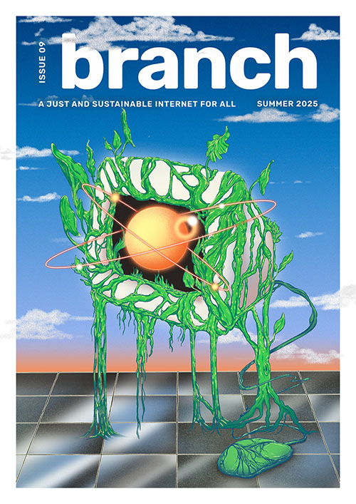

Summer 2025

Branch issue 9. Cover illustration: Tessa Curran (CC BY-NC 4.0)
Welcome!
Editors’ Letter
Fershad Irani, Fieke Jansen and Michelle Thorne
Attuning the web
An Internet that Works with Our Natural Rhythms
Nick Lewis
A Digital Almanac: Attuning Our Web Habits to the Natural World
Lucy Sloss
Building a grid-aware web
Designing a Grid-Aware Branch
Hannah Smith, Fershad Irani, Tom Jarrett
Finding Harmony between Business and Sustainability with Grid-Aware Computing
Michael J. Oghia
Design Constraints in Grid-Aware Web Development
Grace Everts
Pause: Building Awareness and Agency into the Grid-Aware Web
Raj Banerjee and Shraddha Pawar
Adapting WordPress to Grid-Aware Web Experiences (EN)
Nora Ferreirós and Nahuai Badiola
Adaptando WordPress a la intensidad de red (ES)
Nora Ferreirós and Nahuai Badiola
Everyday Green Coding: Bringing Nature and Grid-Awareness to Visual Studio Code
Thuyet (Tia) Nguyen
Regenerativity
Reimagining the Browser for a Green Web
Dietrich Ayala and Michelle Thorne
The Cloud Is Not Above Us
David Mahoney
Sustainable and Equitable Infrastructures: Moving from Extraction to Regeneration
Fieke Jansen
Designing Regenerative Technologies
Ola Bonati and Judith Veenkamp
The Gardening Electricity Handbook
Sunjoo Lee
Sounds of the Grid
Alexis Oh
AI, Climate, and the Global Majority: A Just Transition Toward COP30 and the People’s Summit
Lori Regattieri
Compost Engineers and Sus Saberes Lentos: A Manifest for Regenerative Technologies
Joana Varon and Lucía Egaña Rojas
Cosmology of Internet Infrastructure: Three Visions to Bridging the Digital Divide
Esther Mwema
—
This issue is a collaboration between critical infrastructure lab and Green Web Foundation.